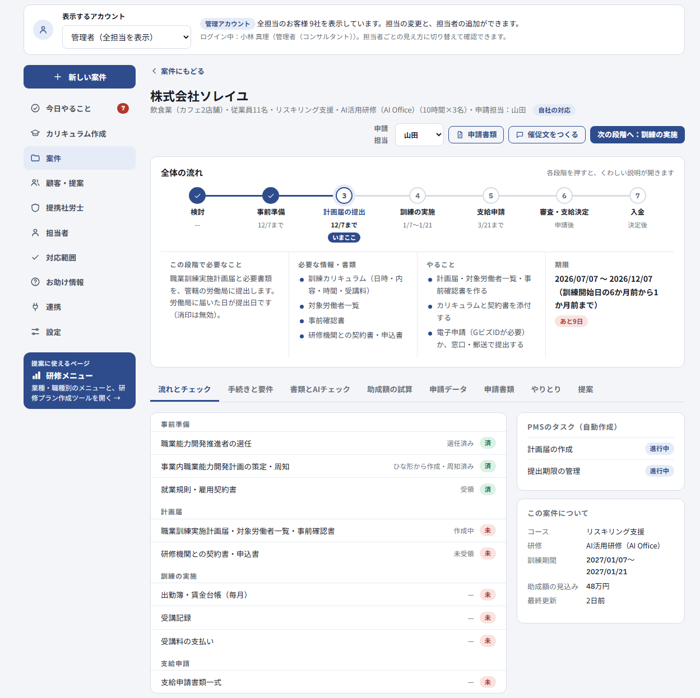
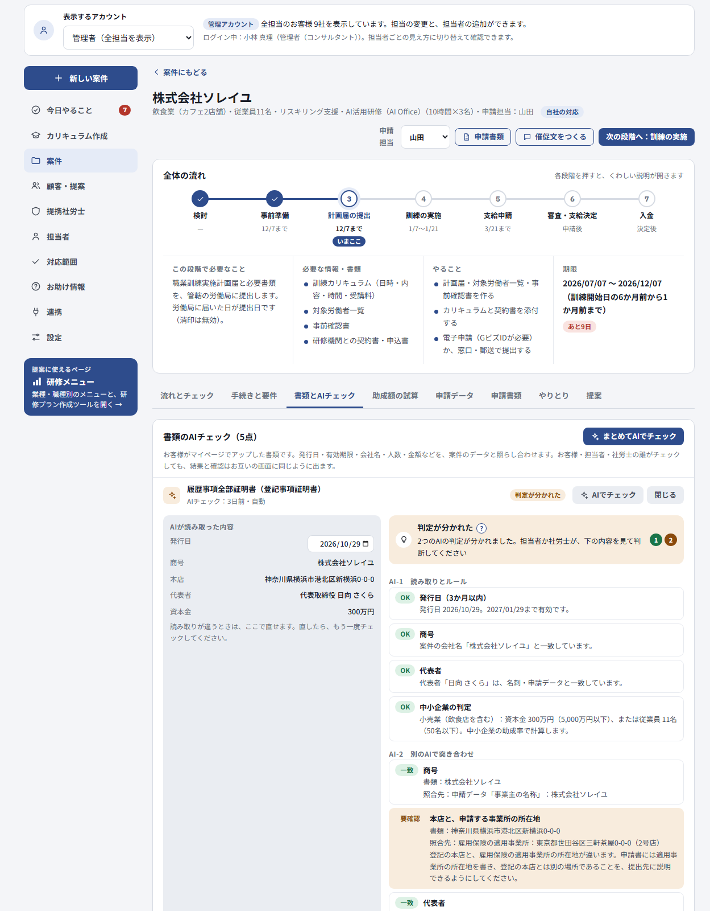
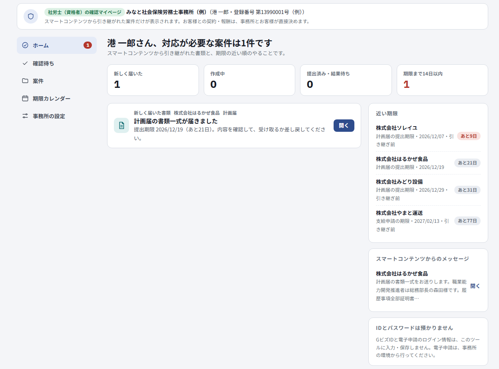
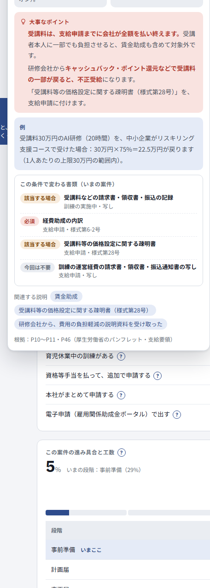
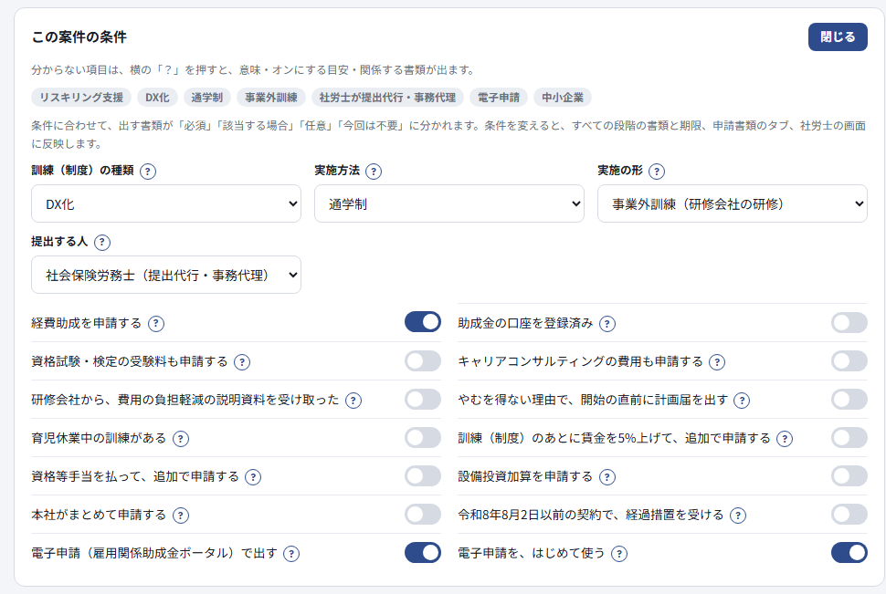
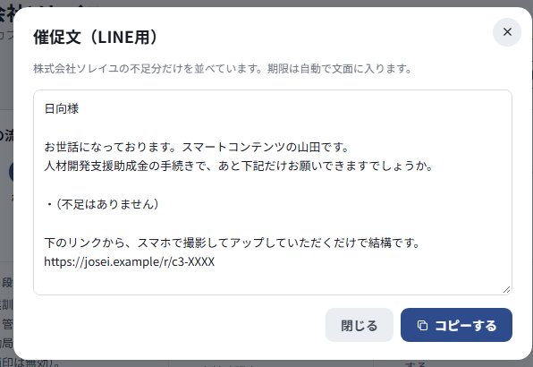
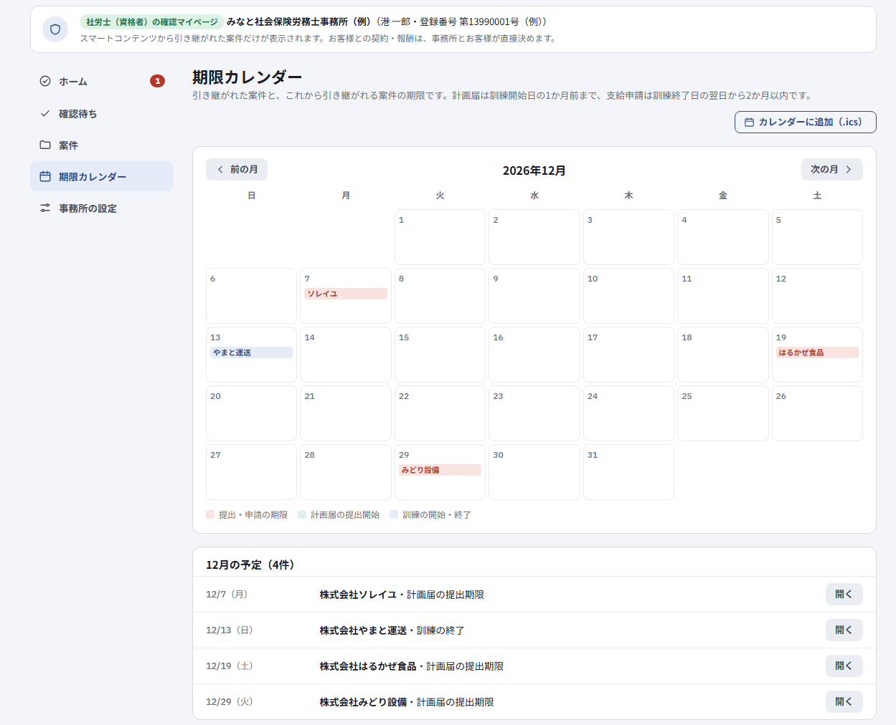
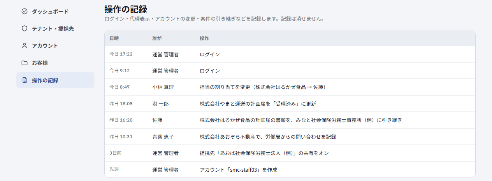

期限を数え間違えたら、助成金がもらえなくなる…
期限はシステムが自動で計算します
訓練の日程を入れるだけで、計画届・支給申請などの期限を計算。土日祝・年末年始は翌開庁日に。近い順に「今日やること」へ並びます。
進行管理を見る計画届から支給申請まで、7つの段階の期限をシステムが自動で計算。お客様がスマホで出した書類は、2つのAIが別々の読み方でチェックします。人が見るのは、判定が分かれたところだけ。


こんな事業者さまに
人材開発支援助成金は、期限が多く、書類が多く、要領が毎年のように変わります。まずは当てはまるものにチェックしてみてください。
チェックしてみてください当てはまる項目の数で、このツールが役に立ちそうな度合いを表示します。
訓練の日程を入れるだけで、計画届・支給申請などの期限を計算。土日祝・年末年始は翌開庁日に。近い順に「今日やること」へ並びます。
進行管理を見るお客様はスマホのマイページから撮ってアップするだけ。担当者は、足りない書類だけを並べたLINE用の文面をコピーして送れます。
お客様の画面を見るAI-1が読み取りとルールで、AI-2が別の読み方で申請データと突き合わせ。人は判定が分かれた書類だけを確認します。
AIチェックを見るコース・訓練の種類・実施方法などを選ぶと、全段階の書類が「必須／該当する場合／任意／今回は不要」に。根拠のページも表示します。
機能の一覧を見る「経費助成」「事前確認書」など76語に、ひとことの説明・大事なポイント・例を用意。新人でも画面を見ながら進められます。
画面を見る段階ごとの「やること」に想定時間を割り当て、終わった分を積み上げて％に。担当者ごとの済んだ工数も管理画面で見られます。
工数の見える化を見るお客様の要望から、令和8年8月3日以降の要項に沿った10時間の案を作成。過去の研修との重複や、対象外になりやすい内容をチェックします。
カリキュラム作成を見る研修会社は書類集めと進行管理まで。申請書類の作成・提出は、提携する社労士が専用画面で行います（社労士法27条に配慮）。
使い方を見るコース・人数・訓練時間・受講料を入れると、経費助成と賃金助成の目安を表示。商談の場で、そのまま説明できます（実際の額は審査で決まります）。
試算の画面を見る期限・書類・チェック・進捗報告を、同じデータでつなぎます。
管理・確認まわりの作業の比較（試算イメージ。当社の想定で、実際の時間は案件や運用により異なります）
訓練の日程を入れれば、計画届・変更届・支給申請の期限を自動で計算。期限の近い順に「今日やること」へ並ぶので、漏れ・うっかりが起きにくい仕組みです。
日程を入れると、下の期限がすべて自動で決まります。横にスクロールできます。
※ 期限の日が土日祝・年末年始にあたるときは、翌開庁日として表示します（祝日の暦・労働局ごとの扱いは導入時に確認）。期限は制度の一般的なルールに基づく目安で、最終的な判断は管轄の労働局の案内に従ってください。
ログインすると最初に表示。上から片づければ、期限の近い作業から自然に終わっていきます。
案件ごとに「お客様待ち」「自社の対応」「社労士の確認待ち」を表示。止まっている案件を見逃しません。
全案件の期限を月のカレンダーで確認。普段のカレンダーアプリにも取り込めます。
日程や内容が変わったときも、変更の内容から提出期限を計算。イレギュラー対応の時間も記録できます。

担当者の「今日やること」。右側に近い期限と、自分の工数が出ます。
期限まで14日以内の案件は、一覧やボードで色を変えて表示。
出勤簿と受講記録を突き合わせ、要件を満たしているか確認。
期限の計算、記録の取り込みなど、システムが済ませた作業を一覧に。
問い合わせの内容を要約して案件に記録。引き継ぎも楽に。

案件ごとの「全体の流れ」。いまの段階で必要な書類・やること・期限がまとまっています。
検討 → 事前準備 → 計画届の提出 → 訓練の実施 → 支給申請 → 審査・支給決定 → 入金。いまどこにいるかを全員が同じ画面で確認できます。
「この段階で必要なこと」「必要な書類」「やること」「期限」を、案件の条件に合わせて表示します。
コース・訓練の種類・実施方法などの条件から、出す書類を自動で仕分け。根拠のページも表示します。
これまで人が2人がかりで行っていた書類の確認を、読み方の違う2つのAIが担当。2つの判定が分かれたところだけを、人が見て判断します。最後は社労士（資格者）の確認印で提出へ。
写真でもPDFでもOK。マイページからアップするだけ。
書類ごとに確認し、登録番号つきの確認印。確認印がないと提出を記録できません。
社労士お客様の画面：要確認の理由と、いつまでに何をすればよいかを表示

担当者の画面：AI-1（ルール）とAI-2（突き合わせ）の結果が並び、分かれた所が一目で分かります。
同じ書類を、人が何度も最初から見直す。忙しい時期ほど、見落としのリスクが上がります。
機械的な照合はAIへ。人は「判断が必要なところ」に時間を使えます。

社労士（資格者）の画面：書類ごとにチェックを付け、確認印を押します。
お客様のマイページ・担当者の画面・社労士の画面に同じ判定が出るので、「言った・言わない」が起きません。
資格者の確認を通らない書類が、そのまま提出に進むことを防ぎます。
AIの判定はあくまで確認の補助です。判定が分かれたものや要確認のものは、担当者・社労士が判断します。
段階ごとの「やること」に想定作業時間を割り当て、終わった分を積み上げます。お客様への説明にも、スタッフの評価にも使えます。
リスキリング支援コース・人材育成支援コースなどの標準的な案件の例。分数は仮の標準値で、運用の実績に合わせて見直します。
合計で約23〜25時間（例）。計画変更届は1件60分のイレギュラーとして加算し、ほかの対応は「作業時間の記録」で追加できます。
1社の申請業務全体を100%としたときの内訳
※ 名前・数値はデモ用の架空のデータです。

管理者だけに出る「担当者」画面。担当件数・進み具合・済んだ工数・イレギュラーを一覧に。

案件ごとの「進み具合と工数」。段階ごとの済み／想定時間と比重が分かります。
「いまの段階は31%、全体で57%です」。お客様のマイページにも進み具合が出ます。
済んだ工数・残り・イレギュラーを担当者ごとに表示。感覚ではなく数字で話せます。
標準の作業時間が分かれば、支援の料金設定や人員計画にも使えます。
ログインした人の役割で、見える画面と案件が変わります。必要な人に、必要な情報だけ。
アプリのインストールは不要。届いたリンクからマイページを開きます。

担当のお客様だけが表示されます。ほかの担当者の案件は見えません。
全担当のお客様を表示。担当の割り当てや担当者の追加ができます。

提携する社労士事務所の専用マイページ。お客様との契約・報酬は、事務所とお客様が直接決めます。

すべて開発中の試作画面です（会社名・人名は架空）。横にスクロールできます。










← 横にスクロール →
研修会社さまの提案にも使える機能です。お客様の要望から、令和8年8月3日以降の要項に沿った10時間の案をつくります。

要望・過去の研修・受講時間を入れると、時間割つきのカリキュラム案ができます。
役割分担に合わせて使い方を選べます。
研修の提案から、助成金の書類集めと進行管理まで。申請書類の作成・提出は提携社労士へ。
複数のお客様の申請を、期限と進み具合で一元管理。確認印までこの画面で。
| 作業 | お客様 | 研修会社 | 社労士（資格者） |
|---|---|---|---|
| 研修カリキュラムの作成・提案 | — | ◎ | — |
| 書類の提出（撮影・アップ） | ◎ | — | — |
| 書類集め・催促・期限の管理 | — | ◎ | ○ |
| AIチェック結果の確認 | ○ | ◎ | ◎ |
| 申請書類の作成 | （本人申請の場合） | × | ◎ |
| 確認印・労働局への提出 | — | × | ◎ |
計画届・変更届・支給申請。土日祝・年末年始は翌開庁日。
AI-1（ルール）＋AI-2（突き合わせ）。分かれたら人が確認。
全段階の書類を「必須／該当／任意／不要」に。根拠ページ付き。
段階ごとの％と、想定・済んだ工数。イレギュラーも記録。
要望から10時間の案。重複・対象外のチェック。
経費助成・賃金助成の目安。中小企業の判定にも対応。
スマホで撮ってアップ。インストール不要。
不足だけを並べたLINE用の文面。やりとりは案件ごとに保存。
書類ごとの確認と登録番号つきの確認印。提出・受理の記録。
76語。新人でも、画面を見ながら進められます。
見込みのお客様から案件化まで、同じ画面で。
役割別の操作マニュアルと営業資料を、アプリの中で閲覧。
助成金の申請には、会社の情報や従業員の情報を扱います。必要以上の情報を持たないことを基本にしています。
GビズIDや電子申請のログイン情報は、入力も保存もしません。
振込先などの口座情報は、このツールでは扱いません。
ログインのときにSMSの確認コードで本人を確認できます。
担当者は自分の担当だけ、社労士は引き継がれた案件だけ。
ログイン・担当変更・引き継ぎなどを記録。記録は消せません。
※ 本ページの画面は開発中の試作です。本番環境の仕様（保存方法・暗号化・バックアップなど）は、導入時に個別にご説明します。
まずはデモで、実際の画面を触ってみてください。
いいえ。支給の可否や金額は、管轄の労働局の審査で決まります。このツールは、期限の管理や書類の確認の漏れ・ミスを起こしにくくするための仕組みです。
AIの判定は確認の補助です。判定が分かれたもの・要確認のものは担当者や社労士が判断し、提出の前には社労士（資格者）の確認印が必要な設計にしています。
研修会社さまの使い方では、書類集めと進行管理までをこのツールで行い、申請書類の作成・提出は提携する社労士が行う設計です。具体的な提携の形（紹介・費用など）は、導入前に提携先の社労士とご確認ください。
人材育成支援コース、リスキリング支援コース、人への投資促進コース、教育訓練休暇等付与コースなどの手続きに沿って、書類と期限を整理しています。制度の改正にあわせて内容を見直します。
ありません。届いたリンクからスマホのブラウザでマイページを開き、書類を撮ってアップするだけです。
ありません。GビズIDや電子申請のログイン情報は、このツールに入力・保存しません。電子申請は、社労士事務所やお客様ご自身の環境から行っていただきます。
はい。期限の日が土日祝・年末年始にあたる場合は、翌開庁日として表示します。祝日の暦や労働局ごとの扱いは、導入時に確認したうえで設定します。
変更の内容から、変更届の提出期限を計算して表示します。変更届の対応は1件60分のイレギュラー作業として工数に加わります（時間は設定で変えられる予定です）。
現在の分数は仮の標準値です。実際の運用の実績と比べて見直し、本番では設定で変更できるようにする予定です。
使えます。担当者ごとにアカウントがあり、自分の担当のお客様だけが表示されます。管理者は全担当の案件を見て、担当の割り当てを変えられます。
案件の数や項目に合わせて、移行の方法をご相談ください。試行運用の段階で、数社分から始めることもできます。
ご利用の人数・案件数・使い方（研修会社さま／社労士事務所さま）に合わせてお見積りします。お気軽にお問い合わせください。
アプリの「ナレッジ」に、お客様・担当スタッフ・管理者・社労士それぞれの操作マニュアルを用意しています。専門用語には「？」の解説も付いています。
社内での検討やお客様へのご説明に。機能・画面・導入の流れを、図解つきでまとめています。
ログインID例：smc-admin（管理者）／パスワード：demo（すべて架空のデータです）
デモのご案内・お見積り・提携のご相談など、お気軽にどうぞ。